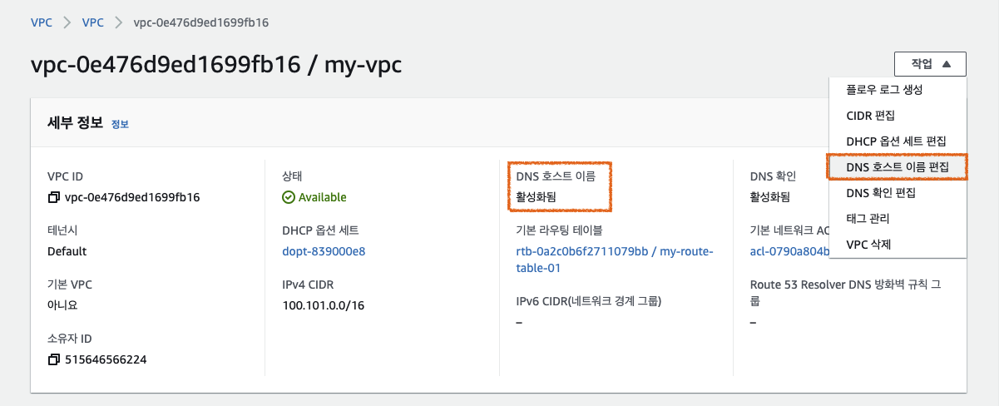
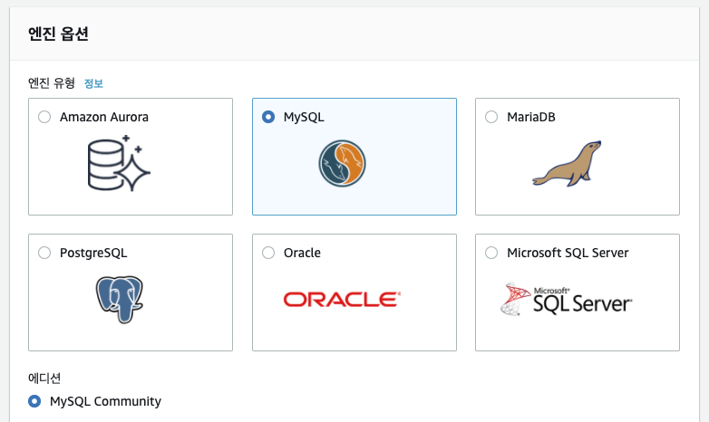
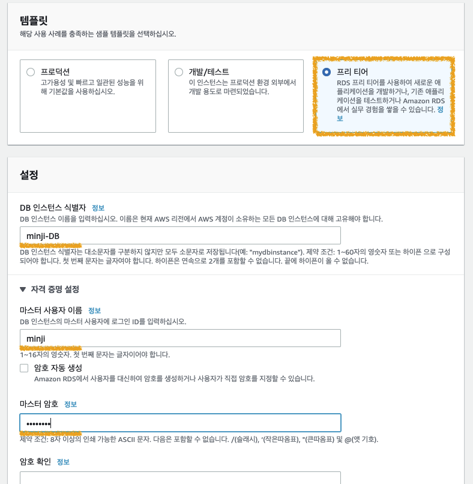
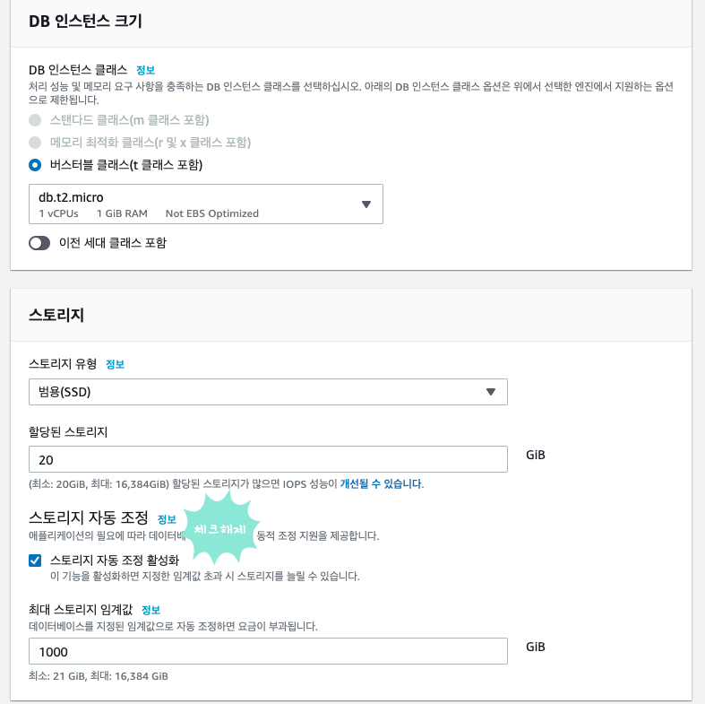
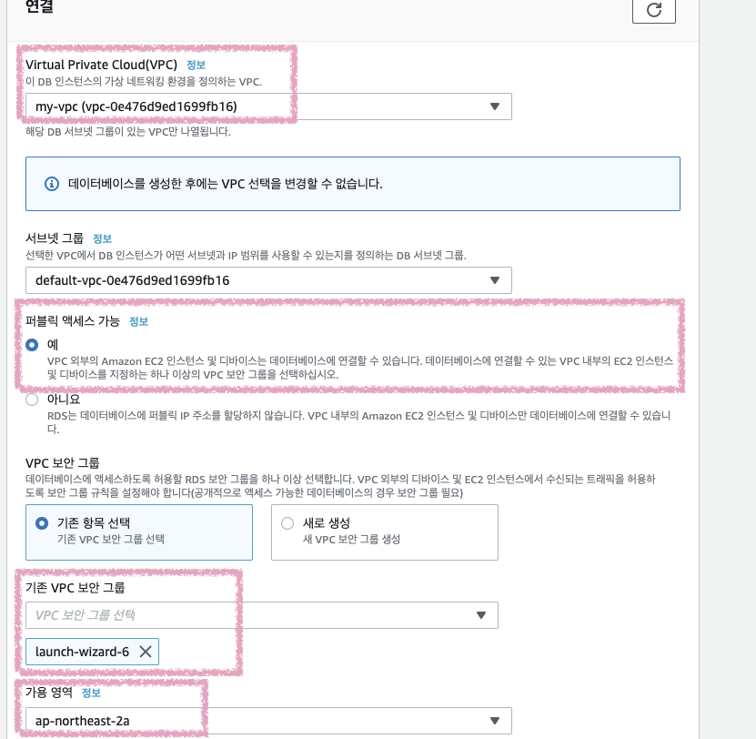
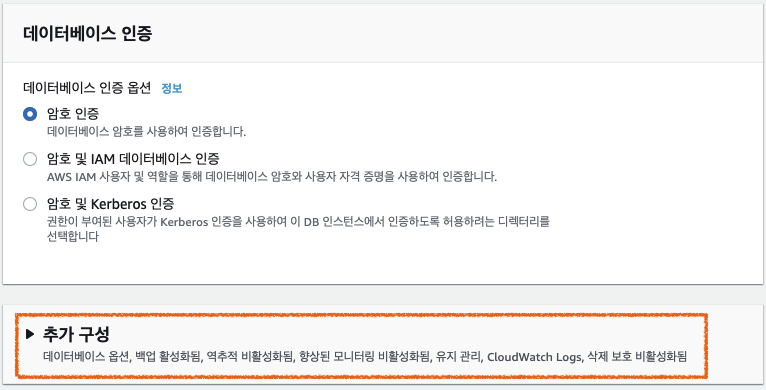
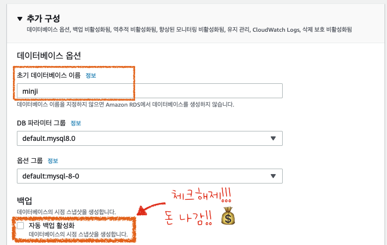
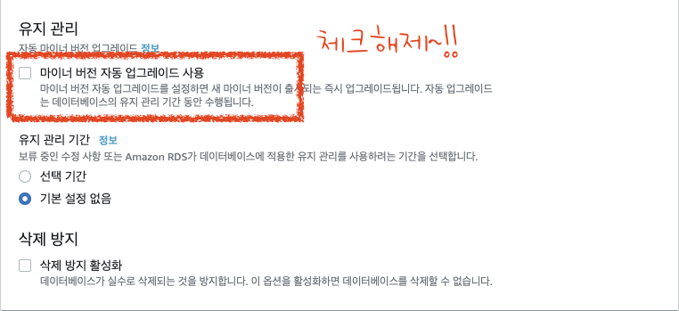

[ Amazon Web Services ]
RDS 생성

우선 DNS 호스트 이름이 활성화 되었는지 확인한다.
활성화됨 표시가 없다면 설정을 통해 활성화 후 RDS를 생성한다.

mySQL 체크.

마스터 사용자 이름 :
RDS가 MySQL 디비를 대신 만들어 주기 때문에, 그 때 생성할 사용자 계정을 미리 만들어 주는 것.

무료버전을 사용하자 ~ 💰
그리고 스토리지 자동 조정은 체크를 꺼주세요.
이것도 요금 나올 수 있음.

분홍색 체크 한 부분처럼 설정해준다.
보안그룹은 3306 포트가 허용된 보안그룹을 사용한다.

추가 구성 클릭

초기 데이터 베이스는 해도 되고 안해도 되지만,
나는 이 디비에 연동할 톰캣 인스턴스의 디비 연동 설정에 minji 라는 이름의 데이터베이스라고 해두었기 때문에 RDS에게 만들 때 minji 디비도 만들어 달라는 요청을 한 것.

체크해제 후, 데이터 생성!
RDS 만들기 끝 🦔
RDS 접속 :
우선 mySQL 서버 프로그램이 깔린 곳에서 접속할 수 있으니, 프로그램 설치.
RDS 접속 명령어 :
RDS는 아이피 대신 엔드포인트로 접속한다.